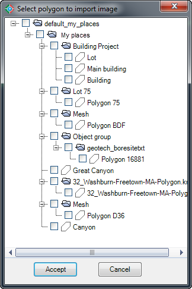
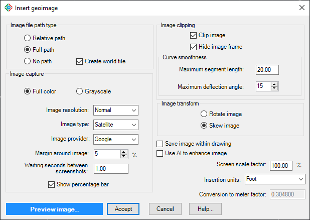
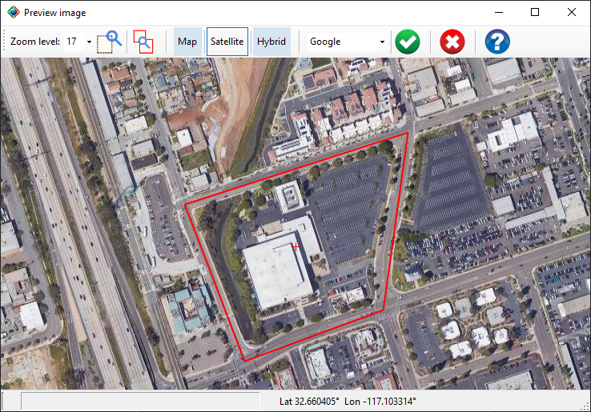

|
|
Toolbar:
Menu: CAD-Earth > Insert geoimage
|
|
|
Command line: CE_INSGEIMAGE
CAD-Earth version: Basic, Plus, Premium. |
.png)
.png)
Command description:
Using this command images can be imported from major service providers (Google Earth, Google, Bing, ESRI, Mapbox) in different resolutions (normal, medium, high, highest) and image modes (satellite, map, hybrid) in full color or grayscale in major image formats (BMP, JPEG, TIFF). Images can be clipped inside a selected Google Earth polygon.
You don't have to georeference your drawing before using this command because the image will be created selecting an existing Google Earth polygon which already contains geographic information.
A dialog box will be displayed where you can select the polygon to define the image extents. After you select the polygon a dialog box will be shown where you can specify various image settings.

Dialog box to select Google Earth polygon
Dialog box settings:

Dialog box to import geoimage
ØImage file path.
•Relative path. The image file must be saved in a subfolder or in a parent folder relative to where the drawing file is saved.
•Full path. Image file will be saved in the folder selected.
•No path. The image file must be saved in the same path as the drawing or in any AutoCAD support file path.
•Create world file. A plain text data file used by geographic information systems (GIS) to georeference raster map images will be created. This file will be saved in the same folder as the image file.
ØImage capture. Image can be imported in full color or in grayscale.
ØImage resolution. Image tiles are processed and joined together to increase image detail, covering the closed polyline extents. If the maximum zoom level is reached after subdivision the number of tiles will be adjusted to the maximum allowable. The maximum number of image tiles processed according to image resolution are:
•Normal. One image tile.
•Medium. Up to four image tiles.
•High. Up to sixteen image tiles.
•Higher. Up to sixty four image tiles.
•Maximum. Up to 256 image tiles.
ØImage type.
•Satellite. Plain aerial image with no additional information.
•Map. A diagrammatic representation showing artificial features with text annotations.
•Hybrid. An aerial image with map information and text annotations.
ØService provider. You can choose from the web service providers Google Earth, Google, Bing, ESRI, Mapbox. Some service providers offer more updated images than others with higher or lower resolution. Google generally have the fastest service and higher quality imagery.
ØMargin around image. Percentage image increase to show more image information around the polygon extents. For example, a 5% margin increases the image extents by 10% in the horizontal and vertical direction (10% for the left an right margin and 10% for the top and bottom margin).
ØWaiting seconds between screenshots. The amount of seconds to wait between screen captures. Increase this value if the image tiles in the final image are not aligned properly.
ØShow percentage progress bar. Uncheck this option if the percentage progress bar is shown in the final image.
ØImage clipping.
•Clip image. Image will be clipped inside the closed polyline.
•Hide image frame. If the image frame is not visible it will not be printed but the image can't be selected. To turn on the image frame, set the IMAGEFRAME variable to ON (1).
ØImage transform.
•Rotate image. Image will be scaled and rotated when inserted to fit the polygon area. The image resolution will be as captured on screen.
•Skew image. Image will be skewed and scaled to better fit the image to the polygon area. The image will appear with a slight blur due to the transformation.
ØSave image within drawing. If this option is checked, binary information from the image file will be saved in the drawing. If the file is not found when opening an image, a new file will be created reading the binary data in the drawing and stored in the CAD-Earth's Images folder.
ØScreen scale factor. This value is calculated automatically. Adjust this value if you see gaps between image tiles.
ØInsertion units. A conversion factor will be applied to scale the image according to the units selected.
ØConversion to meter factor. When you select an insertion unit the corresponding conversion to meter factor will be displayed. If you wish to edit the conversion factor you must select the Custom unit from the list.
ØUse AI to improve image . Images can be enlarged up to 4x times using an AI neural network image enhancer to improve image resolution, light, and color balance.
ØPreview image. A dialog box showing the polygon boundary in red inserted in the corresponding site. You can select different image modes (Map, Satellite, Hybrid) and image providers (Google, Bing, ESRI, Mapbox), you can also select a zoom window, zoom to the polygon extents, or the zoom level.

Tips:
•If you need to place the image in the corresponding UTM coordinates according to a defined coordinate system you must use the command to import geoimage instead.
•To select the image for editing the image frame must be visible. To turn on image frame visibility set the IMAGEFRAME variable to ON (1)
•Images are managed as external references in AutoCAD. If you intend to share a DWG where images are attached you must also include the image files, so the image references can be updated. You can use the IMAGE command to manage image references.
•If you select the relative path option you don't have to recreate the image file path in another computer as long as the image files are included in the same folder as the drawing or in a relative folder.
•The drawing must be saved first before you select the relative path option otherwise the image will be created with full path applied.
•If you select the no path option you must save the image file in the same folder as the drawing or in an any AutoCAD support files path.
•If you press ENTER instead of picking an insertion point the image will be placed in the corresponding WGS84 UTM coordinates in the drawing. If the inserted image is not shown you can use the AutoCAD ZOOM EXTENTS command to display it on the screen.
•Preview the image to make sure it's correctly positioned. Select between different image providers to choose the best image according to your needs. You can maximize the preview window and use the mouse wheel to zoom in and see more detail.
•CAD-Earth subscribers can enhance up to 30 images per month. CAD-Earth Permanent license users can upgrade 30 images per month for a year after the date of purchase or the date of a major version upgrade. If you need to increase the number of images allowed to be enhanced by AI, please contact support@cad-earth.com
Related topics:
Copyright © 2023 Arqcom Software
Google Earth© is a registered trademark of Google inc. All other trademarks are the property of their respective owners.